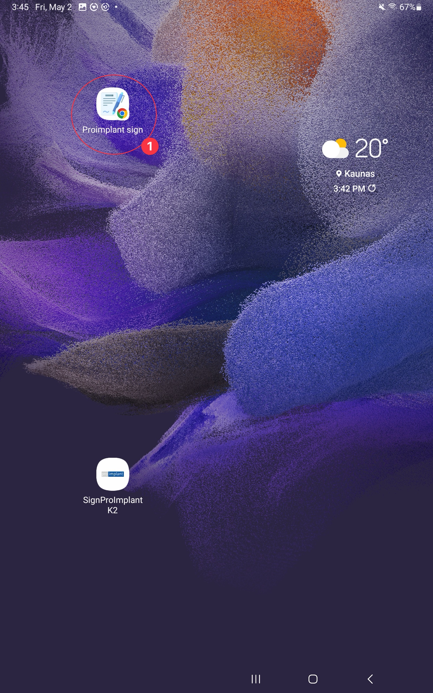

Prisijungimas prie naujos pasirašymo sistemos
Atsidaryti Pro-implant Sign programą
-
Paspausti ant Proimplant sign programėlės arba naršyklėje įvesti adresą:
https://sign.proimplant.lt/api4_tablet/index.php

-
Įvesti prisijungimo duomenis (jie turėtų išlikti planšetės atmintyje)
- Vardas - proimplant
- Raktas - AoER9g4p11JjIq3xXx
- Planšetė - Nurodomas kabineto numeris (K1, K2, K3, K4, K5, K6)

-
Planšetė prijungta! Norint atsijungti, nuspauskite tašką sakinio gale